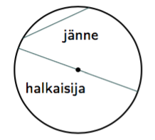
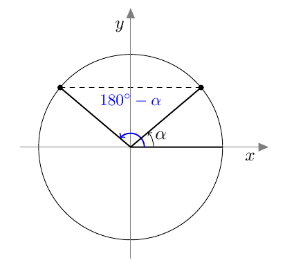
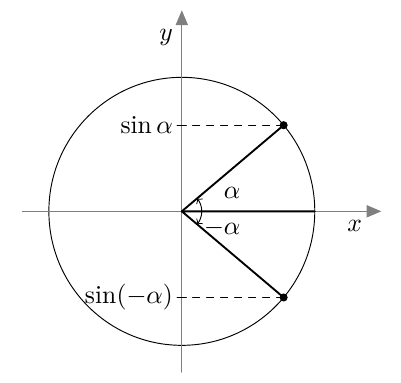
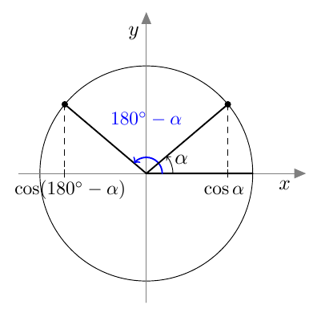
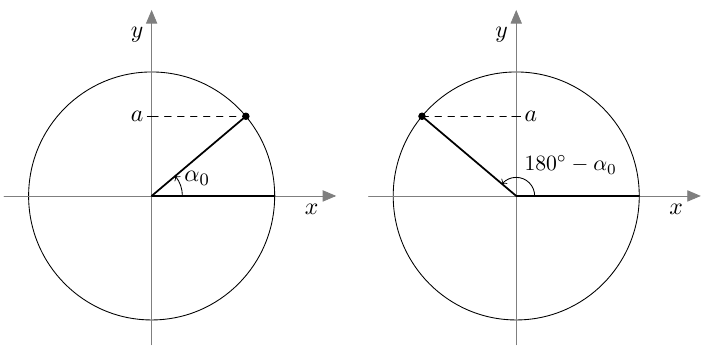
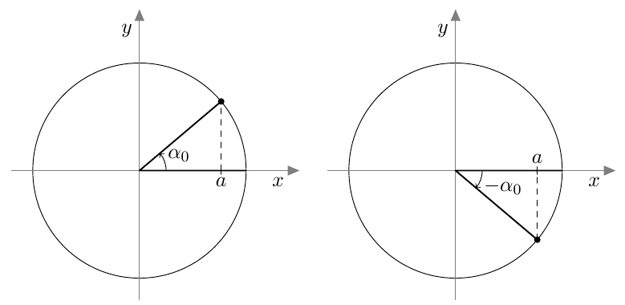

Ympyrä
Cirkel
Tason pisteet, jotka ovat vakioetäisyydellä kiinteästä pisteestä, muodostavat ympyrän. Kiinteä piste on ympyrän keskipiste ja vakioetäisyys sen säde.
Punkterna på ett plan, som ligger på ett konstant avtånd till en given punkt, bildar en cirkel. Den givna punkten är cirkelns mittpunkt och det konstanta avtåndet cirkelns radie.

Jänne on ympyrän kahden pisteen välinen jana. Halkaisija on ympyrän keskipisteen kautta kulkeva jänne.
Korda är linjen mellan två cirkelns två punkter. Diametern är kordan som går genom cirkelns mittpunkt.
Luku \(\pi\) on ympyrän kehän pituuden \(p\) suhde halkaisijan pituuteen \(d\):
Talet \(\pi\) är förhållandet mellan omkretsen \(p\) och längden på diametern \(d\) på cirkeln:
\[\pi = \frac{p}{d}\]Ympyrän pinta-ala \(A\) ja kehän pituus \(p\) riippuvat ympyrän säteestä \(r\) seuraavasti:
Cirkelns area \(A\) och omkretsen \(p\) beror på cirkelns radie \(r\) enligt följande:
\[A = \pi r^2\] \[p = 2\pi r\]Kulma, jonka kärki on ympyrän keskipisteessä, on keskuskulma:
Vinkeln, vars spets är i cirkelns mittpunkt, kallas medelpunktsvinkel:

Keskuskulman kyljet rajaavat ympyrän kehältä kaaren ja ympyrän sisältä sektorin.
Medelpunktsvinkelns vinkelben begränser en båge på cirkeln och inom cirkeln en sektor.

Kaari ja sen päätepisteitä yhdistävä jänne rajaavat ympyrän sisältä segmentin.
Inom cirkeln begränsar en båge och kordan genom dess änpunkter ett segment.

Kaaren pituus \(b\) ja sektorin pinta-ala \(A_S\) riippuvat keskuskulmasta \(\alpha\) ja ympyrän säteestä \(r\) seuraavasti:
Bågens längd \(b\) och sektorn area \(A_S\) beror på medelpunktsvinkeln \(\alpha\) och cirkelns radie \(r\) enligt följande:
\[b = \frac{\alpha}{360°} \cdot 2\pi r\] \[A_S = \frac{\alpha}{360°} \cdot \pi r^2\]Suorakulmio
Rektangel
Suorakulmion pinta-ala \(A\) on samasta kärjestä alkavien sivujen pituuksien tulo. Alla olevan kuvion merkinnöillä \(A=ab\)
Rektangelns area \(A\) är produkten av sidornas längder, som börjar från samma hörn. Med beteckningarna i figuren nedan \(A=ab\)

Kolmio
Triangel
Kolmion pinta-ala \(A\) on \(A=\frac{ah}{2}\), missä \(a\) on kolmion kannan pituus ja \(h\) on korkeus.
Triangelns area \(A\) är \(A=\frac{ah}{2}\), där \(a\) är längden på basen av triangeln och \(h\) är triangelns höjd.

Kolmion kulmien summa on 180°.
Summan av vinklarna i en triangel är 180°.
Pythagoraan lause: Suorakulmaisen kolmion kateettien \(a\), ja \(b\) neliöiden summa on yhtä suuri kuin hypotenuusan \(c\) neliö:
Pythagoras sats: Summan av kvadraten på kateterna \(a\) och \(b\) i en rätvinklig triangel är lika stor som kvadraten på hypotenusan \(c\):
\[a^2+b^2=c^2\]Suorakulmaisessa kolmiossa terävän kulman \(\alpha\) sini, kosini ja tangetti tarkoittavat kolmion sivujen pituuksien suhteita.
I en rätvinklig triangel betyder sinus, kosinus och tangenten av en spätsig vinkel \(\alpha\) förhållandet mellan längderna av triangelns sidor.

Yllä olevan kuvion merkinnöillä
Med beteckningarna ovan
\[\sin \alpha = \dfrac{a}{c}\] \[\cos \alpha = \dfrac{b}{c}\] \[\tan \alpha = \dfrac{a}{b}\]Oletetaan, että \(0° \leq \alpha \leq 180°\). Jos piirretään origosta lähtevä jana, joka muodostaa positiivisen \(x\)-akselin kanssa kulman \(\alpha\) ja jonka pituus on 1, niin
Antag, att \(0° \leq \alpha \leq 180°\). Om man ritar en linje från origo, som bildar med den positiva \(x\)-axeln en vinkel \(\alpha\) och vars längd är 1, så
- kulman \(\alpha\) kosini on tämän janan toisen päätepisteen \(x\)-koordinaatti.
- är kosinus till vinkeln \(\alpha\) \(x\)-koordinaten för den andra ändpunkten till linjen.
- kulman \(\alpha\) sini on tämän janan toisen päätepisteen \(y\)-koordinaatti.
- är sinus till vinkeln \(\alpha\) \(y\)-koordinaten för den andra ändpunkten till linjen.

Sinilause: Alla olevan kuvan merkinnöillä
Sinussatsen: Med beteckningarna i bilden nedan
\[\frac{a}{\sin \alpha} = \frac{b}{\sin \beta} = \frac{c}{\sin \gamma}\]
Pallo
Sfär
Avaruuden pisteet, jotka ovat vakioetäisyydellä kiinteästä pisteestä, muodostavat pallon. Kiinteä piste on pallon keskipiste ja vakioetäisyys sen säde.
Rummets punkter, som ligger på ett konstant avtånd till en given punkt, bildar en sfär. Den givna punkten är sfärens mittpunkt och det konstanta avtåndet cirkelns radie.
Pallon tilavuus \(V\) ja pinta-ala \(A\) riippuvat pallon säteestä \(r\) seuraavasti:
Sfärens volym \(V\) och area \(A\) beror på sfärens radie \(r\) enligt följande:
\[V = \frac{4\pi r^3}{3}\] \[A = 4\pi r^2\]Taso leikkaa pallon sisältä kappaleen, jota kutsutaan pallosegmentiksi, ja erottaa pallon pinnasta kalotin. Pallosegmentin tilavuus \(V_S\) ja kalotin pinta-ala \(A_K\) riippuvat pallosegmentin korkeudesta \(h\) ja pallon säteestä \(r\) seuraavasti:
Planet skär inom sfären ett stycke, som kallas sfäriskt segment eller klotsegment, avgränsar från sfärens yta ett kalott. Den sfäriska segementets volym \(V_S\) och arean av kalotten \(A_K\) beror på höjden \(h\) av det sfäriska segmentet och sfärens radie \(r\) enligt följande:
\[V_S = \pi h^2 \left(r-\dfrac{h}{3}\right)\] \[A_K = 2\pi rh\]
Kartiot
Koner
Ympyräkartion pohja on ympyrä. Pyramidi on kartio, jonka pohja on monikulmio.
Basen av en cirkulär kon är en cirkel. Pyramiden är en kon, vars bas är ett polygon.

Suoran kartion huipusta piirretty korkeusjanan toinen päätepiste on pohjan keskipisteessä.
För en rät kon gäller, att andra ändpunkten för höjdlinjen som dras från konen topp ligger i basens mittpunkt.

Kartion tilavuus \(V\) on kolmasosa kartion pohjan pinta-alan \(A_p\) ja kartion korkeuden \(h\) tulosta:
Konens volym \(V\) är en tredjedel av produkten av basens area \(A_p\) och konens höjd \(h\):
\[V = \frac{A_p \cdot h}{3}\]
Suoran ympyräkartion vaipan pinta-ala \(A_v\) on \[A_v = \pi rs,\] missä \(r\) on kartion pohjaympyrän säde ja \(s\) on etäisyys pohjan reunasta kartion huippuun.
Mantelytans area \(A_v\) för en rät cirkulär kon är \[A_v = \pi rs,\] där \(r\) är radien för konens bas och \(s\) avståndet från basytans kant till konens spets.

Katkaistu kartio muodostuu kartiosta, jonka huippu on leikattu pois pohjan suuntaisella tasolla.
En avstympad kon bildas av en kon, vars topp har skurits bort med ett plan som är likriktat med basen.
Katkaistun kartion tilavuus \(V\) on alla olevan kuvan merkinnöin:
Volymen \(V\) av en avstympad kon är med beteckningarna i bilden nedan:
\[V = \frac{h}{3}\left(A_1+A_2+ \sqrt{A_1A_2}\right)\]
Trigonometria
Trigonometri
Radiaani
Punktprodukt
Kulman suuruus radiaaneina on kulmaa vastaavan ympyrän kaaren pituuden suhde ympyrän säteeseen:
\[\alpha=\frac{b}{r}\]
Oikokulma \(180°\) on \(\pi\) radiaania.
Yksikköympyrä ja kulman kehäpiste
Punktprodukt
Ympyrää, jonka keskipiste on origo ja säde 1, sanotaan yksikköympyräksi. Jos kulma αα sijoitetaan koordinaatistoon niin, että sen kärki on origossa ja toinen kylki positiivisella \(x\)-akselilla, kulman \(\alpha\) kehäpiste on kulman toisen kyljen ja yksikköympyrän leikkauspiste \(A\):

Suunnattu kulma
Punktprodukt
Suunnattu kulma ilmaisee kierron suunnan ja suuruuden. Kierto vastapäivään on positiivinen:

Kierto myötäpäivään on negatiivinen:

Suunnattu kulma merkitään koordinaatistoon niin, että sen alkukylki on positiivisella \(x\)-akselilla. Kierron suuruus määrää, mihin suunnatun kulman loppukylki asettuu.
Suunnatun kulman sini, kosini ja tangentti
Punktprodukt
Kulman \(\alpha\) sini on kulman \(\alpha\) kehäpisteen \(y\)-koordinaatti:

Kulman sinin arvo on aina lukujen −1 ja 1 välissä: kaikilla kulmilla \(\alpha\) pätee
\[−1 \le\sin\alpha\le 1.\]Kulman sini on positiivinen, jos kulman kehäpiste on koordinaatiston I tai II neljänneksessä. Muussa tapauksessa kulman sini on negatiivinen.

Kulman \(\alpha\) kosini on kulman \(\alpha\) kehäpisteen \(x\)-koordinaatti:

Kulman kosinin arvo on aina lukujen −1 ja 1 välissä: kaikilla kulmilla \(\alpha\) pätee
\[−1\le\cos\alpha\le 1.\]Kulman kosini on positiivinen, jos kulman kehäpiste on koordinaatiston I tai IV neljänneksessä. Muussa tapauksessa kulman kosini on negatiivinen.

Oletetaan, että kulman \(\alpha\) kehäpiste ei ole \(y\)-akselilla eli \(\alpha \neq 90^° + n \cdot 180^°\) kaikilla kokonaisluvuilla \(n\). Kulman \(\alpha\) tangentti on kulman \(\alpha\) tangenttipisteen \(y\)-koordinaatti:
Piirretään yksikköympyrälle \(y\)-askelin suuntainen tangentti pisteeseen (1,0). Tämän tangenttisuoran ja suunnatun kulman \(\alpha\) loppukyljen tai sen jatkeen leikkauspiste \(B\) on kulman \(\alpha\) tangenttipiste:

Kulman tangentti voi olla mikä tahansa reaaliluku. Kulman tangentti on positiivinen, jos kulman kehäpiste on koordinaatiston I tai III neljänneksessä. Muussa tapauksessa kulman tangentti on negatiivinen.

Peilaukset akselien suhteen
Punktprodukt
Kulmalla \(\alpha\) ja sen suplementtikulmalla \(180°\alpha\) on sama sini:
\[\sin(180° - \alpha =\sin\alpha\] Kulman \(\alpha\) ja sen vastakulman \(−\alpha\) sinit ovat toistensa vastalukuja:
\[\sin(−\alpha)=−\sin\alpha\] Kulmalla \(\alpha\) ja sen vastakulmalla \(−\alpha\) on sama kosini:
\[\cos(−\alpha)=\cos\alpha\] Kulman \(\alpha\) ja sen suplementtikulman \(180° −\alpha\) kosinit ovat toistensa vastalukuja:
\[\cos(180° -\alpha =−\cos\alpha\]Kulman \(\alpha\) ja sen vastakulman \(-\alpha\) tangentit ovat toistensa vastalukuja:
\[\tan(−\alpha)=−\tan\alpha\]Kulman \(\alpha\) ja sen suplementtikulman \(180°-\alpha\) tangentit ovat toistensa vastalukuja:
\[\tan(180°−\alpha)=−\tan\alpha\]Sini- kosini- ja tangenttiyhtälön ratkaisu
Punktprodukt
Oletetaan, että \(\alpha_0\) on yksi kulma, joka toteuttaa yhtälön \(\sin\alpha=a\). Yhtälön ratkaisu on tällöin
\[\alpha=\alpha_0+n\cdot360°\]tai
\[\alpha=180°−\alpha_0+n\cdot360°,\]missä \(n\) on kokonaisluku.
Oletetaan, että \(\alpha_0\) on yksi kulma, joka toteuttaa yhtälön \(\cos\alpha=a\). Yhtälön ratkaisu on tällöin
\[\alpha=\alpha_0+n\cdot 360°\]tai
\[\alpha=−\alpha_0+n\cdot 360°,\]missä \(n\) on kokonaisluku.
Oletetaan, että \(\alpha_0\) on yksi kulma, joka toteuttaa yhtälön \(\tan\alpha=a\). Yhtälön ratkaisu on tällöin
\[\alpha=\alpha_0+n\cdot180°,\]missä \(n\) on kokonaisluku.

Jokaisen kulman sinin ja kosinin neliöiden summa on 1:
\[\sin 2\alpha+\cos 2\alpha =1.\]Kulman \(\alpha\) tangentti on sinin ja kosinin osamäärä:
\[\tan\alpha=\sin\alpha\cos\alpha.\]Kulmien \(\alpha + \beta\) ja \(\alpha - \beta\) sini ja kosini saadaan laskettua seuraavasti:
\[\sin(\alpha + \beta)=\sin\alpha\cos\beta+\cos\alpha\sin\beta\] \[\sin(\alpha - \beta)=\sin\alpha\cos\beta−\cos\alpha\sin\beta\] \[\cos(\alpha + \beta)=\cos\alpha\cos\beta−\sin\alpha\sin\beta\] \[\cos(\alpha - \beta)=\cos\alpha\cos\beta+\sin\alpha\sin\beta\]Kaikilla kulmilla \(x\) pätee
\[\cos\left(x−\frac{\pi}{2}\right)=\sin x\] \[\sin x\left(x+\frac{\pi}{2}\right)=\cos x\]Kulman \(2x\) sini, kosini ja tangentti saadaan laskettua kulman \(x\) sinin, kosinin ja tangentin avulla:
\[\sin2x=2\sin x\cos x\] \[\cos2x=\cos^2x−\sin^2x\] \[\tan2x=\frac{2\tan x}{1−\tan^2x}.\]Sini-, kosini- ja tangenttifunktion ominaisuuksia
Punktprodukt
Sini- ja kosini funktioiden arvojoukko on suljettu väli \(\left[−1,1\right]\).
Tangenttifunktio on määritelty, jos ja vain jos
\[x\neq \frac{\pi}{2}+n\pi,\]missä \(n\) on kokonaisluku. Tangenttifunktion arvojoukko on koko lukusuora \(\mathbb{R}\).
Sini-, kosini- ja tangenttifunktiot ovat jaksollisia funktioita. Sinin ja kosinin jakso on \(2\pi\) eli kaikilla muuttujan \(x\) arvoilla pätee
\[\sin(x+2\pi)=\sin x\] \[\cos x(x+2\pi)=\cos x\]
\[\cos x(x+2\pi)=\cos x\]

Tangenttifunktion jakso on \(\pi\) eli määrittelyjoukossa kaikilla muuttujan \(x\) arvoilla pätee
\[\tan(x+\pi)=\tan x\]
Vektorit
Vektorer
Vektoreiden samuus
Vektorer
- Kaksi vektoria ovat samat, jos ja vain jos ne voidaan esittää samalla tavalla vektoreiden \(\overline{\mathrm{i}}\) ja \(\overline{\mathrm{j}}\) avulla. Tarkemmin sanottuna vektorit \(\overline{\mathrm{v}} = x_1 \overline{\mathrm{i}} + y_1 \overline{\mathrm{j}}\) ja \(\overline{\mathrm{w}} = x_2 \overline{\mathrm{i}} + y_2 \overline{\mathrm{j}}\) ovat samat eli \(\overline{\mathrm{v}}= \overline{\mathrm{w}}\), jos ja vain jos \(x_1=x_2\) ja \(y_1=y_2\).
- Kaksi vektoria ovat samat, jos ja vain jos ne voidaan esittää samalla tavalla vektoreiden \(\overline{\mathrm{i}}\), \(\overline{\mathrm{j}}\) ja \(\overline{\mathrm{k}}\) avulla. Tarkemmin sanottuna vektorit \(\overline{\mathrm{v}} = x_1 \overline{\mathrm{i}} + y_1 \overline{\mathrm{j}}+ z_1 \overline{\mathrm{k}}\) ja \(\overline{\mathrm{w}} = x_2 \overline{\mathrm{i}} + y_2 \overline{\mathrm{j}} + z_2 \overline{\mathrm{k}}\) ovat samat eli \(\overline{\mathrm{v}}= \overline{\mathrm{w}}\), jos ja vain jos \(x_1=x_2\), \(y_1=y_2\) ja \(z_1=z_2\).
- Kaksi vektoria ovat samat, jos ja vain jos ne ovat samansuuntaiset ja yhtä pitkät.
Paikkavektori
Vektorer
Vektori, joka lähtee origosta ja joka loppuu pisteeseen \(P\), on pisteen \(P\) paikkavektori. Pisteen \(P\) paikkavektoria voidaan merkitä \(\overline{\mathrm{OP}}\).
Nollavektori
Vektorer
Vektoria \(0\overline{\mathrm{i}}+0 \overline{\mathrm{i}}\) sanotaan nollavektoriksi ja merkitään \(\overline{0}\).
Summa
Vektorer
Vektoreiden \(\overline{\mathrm{v}}\) ja \(\overline{\mathrm{w}}\) summa \(\overline{\mathrm{v}} + \overline{\mathrm{w}}\) saadaan laskemalla vektorit komponenteittain yhteen.
Vektorin kertominen reaaliluvulla
Vektorer
Vektorin \(\overline{\mathrm{v}}\) skalaarimonikerta \(r\overline{\mathrm{i}}\) saadaan kertomalla vektorin \(\overline{\mathrm{v}}\) komponentit reaaliluvulla \(r\).
Vastavektori
Vektorer
Vektori \(-1\overline{\mathrm{v}}\) on vektorin \(\overline{\mathrm{v}}\) vastavektori. Sitä merkitään \(-\overline{\mathrm{v}}\).
Vektoreiden erotus
Vektorer
Vektoreiden \(\overline{\mathrm{v}}\) ja \(\overline{\mathrm{w}}\) erotus \(\overline{\mathrm{v}}-\overline{\mathrm{w}}\) saadaan lisäämällä vektoriin \(\overline{\mathrm{v}}\) vastavektori \(-1\overline{\mathrm{w}}\).
Vektoreiden yhdensuuntaisuus
Vektorer
Vektorit \(\overline{\mathrm{v}}\) ja \(\overline{\mathrm{w}}\) ovat yhdensuuntaiset eli \(\overline{\mathrm{v}} \parallel \overline{\mathrm{w}}\), jos ja vain jos \(\overline{\mathrm{v}}= r \overline{\mathrm{w}}\) jollakin reaaliluvulla \(r \neq 0\).
Vektoreiden pituus
Vektorer
Vektorin \(\overline{\mathrm{v}} = x \overline{\mathrm{i}} + y \overline{\mathrm{j}}\) pituus on
\[|\overline{\mathrm{v}}|=\sqrt{x^2+y^2}.\]Vektorin \(\overline{\mathrm{v}} = x \overline{\mathrm{i}} + y \overline{\mathrm{j}} + z \overline{\mathrm{k}}\) pituus on
\[|\overline{\mathrm{v}}|=\sqrt{x^2+y^2+z^2}.\]Kaikilla vektoreilla \(\overline{\mathrm{v}}\) ja reaaliluvuilla \(t\) pätee, että
\[|t\overline{\mathrm{v}}|=|t|\cdot |\overline{\mathrm{v}}|.\]Yksikkövektori
Vektorer
Vektoria, jonka pituus on 1, sanotaan yksikkövektoriksi.
Vektorin \(\overline{\mathrm{v}} \neq 0\) suuntainen yksikkövektori \(\overline{\mathrm{v}}^0\) on
\[\frac{1}{|\overline{\mathrm{v}}|}\overline{\mathrm{v}}.\]Vektorin komponentit
Vektorer
Oletetaan, että \(\overline{\mathrm{v}}\) ja \(\overline{\mathrm{w}}\) ovat kaksi vektoria, joista kumpikaan ei ole nollavektori. Oletetaan lisäksi, että vektorit \(\overline{\mathrm{v}}\) ja \(\overline{\mathrm{w}}\) eivät ole yhdensuuntaiset. Jos vektori \(\overline{\mathrm{a}}\) voidaan kirjoittaa muodossa \[ \overline{\mathrm{a}} = s\overline{\mathrm{v}} + t\overline{\mathrm{w}} \]
missä \(s\) ja \(t\) ovat reaalilukuja, niin sanotaan, että \(s\overline{\mathrm{v}}\) ja \(t\overline{\mathrm{w}}\) ovat vektorin \(\overline{\mathrm{a}}\) vektoreiden \(\overline{\mathrm{v}}\) ja \(\overline{\mathrm{w}}\) suuntaiset komponentit.
Pistetulo
Punktprodukt
Vektoreiden \(\overline{\mathrm{v}} = x_1 \overline{\mathrm{i}} + y_1 \overline{\mathrm{j}}\) ja \(\overline{\mathrm{w}} = x_2 \overline{\mathrm{i}} + y_2 \overline{\mathrm{j}}\) pistetulo on
\[\overline{\mathrm{v}} \cdot \overline{\mathrm{w}} = x_1x_2+y_1y_2.\]Vektoreiden \(\overline{\mathrm{v}} = x_1 \overline{\mathrm{i}} + y_1 \overline{\mathrm{j}} + z_1 \overline{\mathrm{k}}\) ja \(\overline{\mathrm{w}} = x_2 \overline{\mathrm{i}} + y_2 \overline{\mathrm{j}} + z_2 \overline{\mathrm{k}}\) pistetulo on
\[\overline{\mathrm{v}} \cdot \overline{\mathrm{w}} = x_1x_2+y_1y_2+x_3y_3.\]Olkoot \(\overline{\mathrm{a}}\), \(\overline{\mathrm{b}}\) ja \(\overline{\mathrm{c}}\) vektoreita ja \(t\) reaaliluku. Pistetulolla on seuraavat ominaisuudet:
- Vaihdannaisuus: \(\overline{\mathrm{a}} \cdot \overline{\mathrm{b}} = \overline{\mathrm{b}} \cdot \overline{\mathrm{a}}\)
- Osittelulaki: \(\overline{\mathrm{a}} \cdot (\overline{\mathrm{b}} + \overline{\mathrm{c}}) =(\overline{\mathrm{a}} \cdot \overline{\mathrm{b}}) + (\overline{\mathrm{a}} \cdot \overline{\mathrm{c}})\)
- Skalaarin siirto: \(t(\overline{\mathrm{a}} \cdot \overline{\mathrm{b}}) = (t\overline{\mathrm{a}}) \cdot \overline{\mathrm{b}} = \overline{\mathrm{a}} \cdot (t\overline{\mathrm{b}})\)
Vektorin pistetulo itsensä kanssa on yhtä suuri kuin vektorin pituuden neliö. Toisin sanottuna
\[\overline{\mathrm{v}} \cdot \overline{\mathrm{v}} = \left|\overline{\mathrm{v}}\right|^2.\]Vektoreiden \(\overline{\mathrm{v}}\) ja \(\overline{\mathrm{w}}\) pistetulolle pätee
\[\overline{\mathrm{v}} \cdot \overline{\mathrm{w}} = |\overline{\mathrm{v}}||\overline{\mathrm{w}}|\cos (\overline{\mathrm{v}}, \overline{\mathrm{w}}).\]Jos \(\overline{\mathrm{v}} neq 0\) ja \(\overline{\mathrm{w}} neq 0\), niin vektoreiden \(\overline{\mathrm{v}}\) ja \(\overline{\mathrm{w}}\) välinen kulma \(\left(\overline{\mathrm{v}},\overline{\mathrm{w}}\right)\) saadaan yhtälöstä
\[\cos (\overline{\mathrm{v}}, \overline{\mathrm{w}})=\frac{\overline{\mathrm{v}} \cdot \overline{\mathrm{w}}}{|\overline{\mathrm{v}}||\overline{\mathrm{w}}|}.\]Oletetaan, että \(\overline{\mathrm{v}} neq 0\) ja \(\overline{\mathrm{w}} neq 0\). Vektorit \(\overline{\mathrm{v}}\) ja \(\overline{\mathrm{w}}\) ovat toisiaan vastaan kohtisuorassa, jos ja vain jos \(\overline{\mathrm{v}} \cdot \overline{\mathrm{w}}=0\)
Suoran vektorimuotoinen parametriesitys
Punktprodukt
Oletetaan, että \(A\) on suoran \(L\) piste ja \(\overline{\mathrm{v}}\) on suoran \(L\) suuntavektori. Yhtälö
\[\overline{\mathrm{OP}} = \overline{\mathrm{OA}} + t\overline{\mathrm{v}}\]on suoran \(L\) vektorimuotoinen parametriesitys.
Tässä esiintyvä kerroin \(t\) on parametri ja vektori \(\overline{\mathrm{OP}}\) on suoran paikkavektori.
Tason vektorikuotoinen parametriesitys
Punktprodukt
Oletetaan, että piste \(A\) on tasossa \(T\), jonka suuntavektorit ovat \(\overline{\mathrm{v}}\) ja \(\overline{\mathrm{w}}\). Oletetaan lisäksi, että \(\overline{\mathrm{v}} \nparallel \overline{\mathrm{w}}\) . Yhtälö
\[\overline{\mathrm{OP}} = \overline{\mathrm{OA}} + s\overline{\mathrm{v}} + t\overline{\mathrm{w}}\]on tason \(T\) vektorimuotoinen parametriesitys. Tässä esiintyvät kertoimet \(s\) ja \(t\) ovat parametreja ja vektori \(\overline{\mathrm{OA}}\) on tason paikkavektori.
Suoran normaalimuotoinen yhtälö
Punktprodukt
Oletetaan, että \(L\) on \(xy\)-tason suora ja \(\overline{\mathrm{n}} = a\overline{\mathrm{i}} + b\overline{\mathrm{j}}\) on sen normaalivektori. Yhtälö
\[ax+by+c=0\]on suoran \(L\) normaalimuotoinen yhtälö.
Tason normaalimuotoinen yhtälö
Punktprodukt
Oletetaan, että \(\overline{\mathrm{n}} = a\overline{\mathrm{i}} + b\overline{\mathrm{j}} + c\overline{\mathrm{k}}\) on tason \(T\) normaalivektori. Yhtälö
\[ax+by+cz+d=0\]on tason \(T\) normaalimuotoinen yhtälö.
| \[S=\int_a^b\sqrt{1+[f'(x)]^2}\mathrm{d} x\] |
| 1. | \[A=\int_a^b f(x) \mathrm{d} x\] kun \(f(x) \ge 0\) | \[A=\int_a^b f(x) \mathrm{d} x\] då \(f(x) \ge 0\) |
| 2. | \[A=-\int_a^b f(x) \mathrm{d} x\] kun \(f(x) \le 0\) | \[A=-\int_a^b f(x) \mathrm{d} x\] då \(f(x) \le 0\) |
| 3. | \[A=\int_a^b \left| f(x)\right| \mathrm{d} x = \int_a^c f(x) \mathrm{d} x - \int_b^c f(x) \mathrm{d} x \] | |
| 4. | \[A=\int_a^b [f(x)-g(x)] \mathrm{d}\] kun \(f(x) \ge g(x)\) | \[A=\int_a^b [f(x)-g(x)] \mathrm{d}\] då \(f(x) \ge g(x)\) |
| 5. | \[A=2\pi \int_a^b \left| f(x)\right| \sqrt{+[f'(x)]^2} \mathrm{d} x\] |
Lukujoukot
Talmmändger
| $$\mathbb{N}$$ | luonnollisten lukujen joukko | mängden av alla naturliga tal |
| $$\mathbb{Z}$$ | kokonaislukujen joukko | mängden av alla heltal |
| $$\mathbb{Q}$$ | rationaalilukujen joukko | mängden av alla rationella tal |
| $$\overline{\mathbb{Q}}, \mathbb{R} - \mathbb{Q}, \mathbb{R} \setminus \mathbb{Q}$$ | irrationaalilukujen joukko | mängden av alla irrationella tal |
| $$\mathbb{R}$$ | reaalilukujen joukko | mängden av alla reella tal |
| $$\mathbb{C}$$ | kompleksilukujen joukko | mängden av alla komplexa tal |
Todennäköisyyslaskenta
Sannolikhetslära
Normaalijakauman kertymäfunktio
| z | 0,00 | 0,01 | 0,02 | 0,03 | 0,04 | 0,05 | 0,06 | 0,07 | 0,08 | 0,09 |
| -3,4 | 0,0003 | 0,0003 | 0,0003 | 0,0003 | 0,0003 | 0,0003 | 0,0003 | 0,0003 | 0,0003 | 0,0002 |
| -3,3 | 0,0005 | 0,0005 | 0,0005 | 0,0004 | 0,0004 | 0,0004 | 0,0004 | 0,0004 | 0,0004 | 0,0003 |
| -3,2 | 0,0007 | 0,0007 | 0,0006 | 0,0006 | 0,0006 | 0,0006 | 0,0006 | 0,0005 | 0,0005 | 0,0005 |
| -3,1 | 0,0010 | 0,0009 | 0,0009 | 0,0009 | 0,0008 | 0,0008 | 0,0008 | 0,0008 | 0,0007 | 0,0007 |
| -3,0 | 0,0013 | 0,0013 | 0,0013 | 0,0012 | 0,0012 | 0,0011 | 0,0011 | 0,0011 | 0,0010 | 0,0010 |
| -2,9 | 0,0019 | 0,0018 | 0,0018 | 0,0017 | 0,0016 | 0,0016 | 0,0015 | 0,0015 | 0,0014 | 0,0014 |
| -2,8 | 0,0026 | 0,0025 | 0,0024 | 0,0023 | 0,0023 | 0,0022 | 0,0021 | 0,0021 | 0,0020 | 0,0019 |
| -2,7 | 0,0035 | 0,0034 | 0,0033 | 0,0032 | 0,0031 | 0,0030 | 0,0029 | 0,0028 | 0,0027 | 0,0026 |
| -2,6 | 0,0047 | 0,0045 | 0,0044 | 0,0043 | 0,0041 | 0,0040 | 0,0039 | 0,0038 | 0,0037 | 0,0036 |
| -2,5 | 0,0062 | 0,0060 | 0,0059 | 0,0057 | 0,0055 | 0,0054 | 0,0052 | 0,0051 | 0,0049 | 0,0048 |
| -2,4 | 0,0082 | 0,0080 | 0,0078 | 0,0075 | 0,0073 | 0,0071 | 0,0069 | 0,0068 | 0,0066 | 0,0064 |
| -2,3 | 0,0107 | 0,0104 | 0,0102 | 0,0099 | 0,0096 | 0,0094 | 0,0091 | 0,0089 | 0,0087 | 0,0084 |
| -2,2 | 0,0139 | 0,0136 | 0,0132 | 0,0129 | 0,0125 | 0,0122 | 0,0119 | 0,0116 | 0,0113 | 0,0110 |
| -2,1 | 0,0179 | 0,0174 | 0,0170 | 0,0166 | 0,0162 | 0,0158 | 0,0154 | 0,0150 | 0,0146 | 0,0143 |
| -2,0 | 0,0228 | 0,0222 | 0,0217 | 0,0212 | 0,0207 | 0,0202 | 0,0197 | 0,0192 | 0,0188 | 0,0183 |
| -1,9 | 0,0287 | 0,0281 | 0,0274 | 0,0268 | 0,0262 | 0,0256 | 0,0250 | 0,0244 | 0,0239 | 0,0233 |
| -1,8 | 0,0359 | 0,0351 | 0,0344 | 0,0336 | 0,0329 | 0,0322 | 0,0314 | 0,0307 | 0,0301 | 0,0294 |
| -1,7 | 0,0446 | 0,0436 | 0,0427 | 0,0418 | 0,0409 | 0,0401 | 0,0392 | 0,0384 | 0,0375 | 0,0367 |
| -1,6 | 0,0548 | 0,0537 | 0,0526 | 0,0516 | 0,0505 | 0,0495 | 0,0485 | 0,0475 | 0,0465 | 0,0455 |
| -1,5 | 0,0668 | 0,0655 | 0,0643 | 0,0630 | 0,0618 | 0,0606 | 0,0594 | 0,0582 | 0,0571 | 0,0559 |
| -1,4 | 0,0808 | 0,0793 | 0,0778 | 0,0764 | 0,0749 | 0,0735 | 0,0721 | 0,0708 | 0,0694 | 0,0681 |
| -1,3 | 0,0968 | 0,0951 | 0,0934 | 0,0918 | 0,0901 | 0,0885 | 0,0869 | 0,0853 | 0,0838 | 0,0823 |
| -1,2 | 0,1151 | 0,1131 | 0,1112 | 0,1093 | 0,1075 | 0,1056 | 0,1038 | 0,1020 | 0,1003 | 0,0985 |
| -1,1 | 0,1357 | 0,1335 | 0,1314 | 0,1292 | 0,1271 | 0,1251 | 0,1230 | 0,1210 | 0,1190 | 0,1170 |
| -1,0 | 0,1587 | 0,1562 | 0,1539 | 0,1515 | 0,1492 | 0,1469 | 0,1446 | 0,1423 | 0,1401 | 0,1379 |
| -0,9 | 0,1841 | 0,1814 | 0,1788 | 0,1762 | 0,1736 | 0,1711 | 0,1685 | 0,1660 | 0,1635 | 0,1611 |
| -0,8 | 0,2119 | 0,2090 | 0,2061 | 0,2033 | 0,2005 | 0,1977 | 0,1949 | 0,1922 | 0,1894 | 0,1867 |
| -0,7 | 0,2420 | 0,2389 | 0,2358 | 0,2327 | 0,2296 | 0,2266 | 0,2236 | 0,2206 | 0,2177 | 0,2148 |
| -0,6 | 0,2743 | 0,2709 | 0,2676 | 0,2643 | 0,2611 | 0,2578 | 0,2546 | 0,2514 | 0,2483 | 0,2451 |
| -0,5 | 0,3085 | 0,3050 | 0,3015 | 0,2981 | 0,2946 | 0,2912 | 0,2877 | 0,2843 | 0,2810 | 0,2776 |
| -0,4 | 0,3446 | 0,3409 | 0,3372 | 0,3336 | 0,3300 | 0,3264 | 0,3228 | 0,3192 | 0,3156 | 0,3121 |
| -0,3 | 0,3821 | 0,3783 | 0,3745 | 0,3707 | 0,3669 | 0,3632 | 0,3594 | 0,3557 | 0,3520 | 0,3483 |
| -0,2 | 0,4207 | 0,4168 | 0,4129 | 0,4090 | 0,4052 | 0,4013 | 0,3974 | 0,3936 | 0,3897 | 0,3859 |
| -0,1 | 0,4602 | 0,4562 | 0,4522 | 0,4483 | 0,4443 | 0,4404 | 0,4364 | 0,4325 | 0,4286 | 0,4247 |
| -0,0 | 0,5000 | 0,4960 | 0,4920 | 0,4880 | 0,4840 | 0,4801 | 0,4761 | 0,4721 | 0,4681 | 0,4641 |
| 0,0 | 0,5000 | 0,5040 | 0,5080 | 0,5120 | 0,5160 | 0,5199 | 0,5239 | 0,5279 | 0,5319 | 0,5359 |
| 0,1 | 0,5398 | 0,5438 | 0,5478 | 0,5517 | 0,5557 | 0,5596 | 0,5636 | 0,5675 | 0,5714 | 0,5753 |
| 0,2 | 0,5793 | 0,5832 | 0,5871 | 0,5910 | 0,5948 | 0,5987 | 0,6026 | 0,6064 | 0,6103 | 0,6141 |
| 0,3 | 0,6179 | 0,6217 | 0,6255 | 0,6293 | 0,6331 | 0,6368 | 0,6406 | 0,6443 | 0,6480 | 0,6517 |
| 0,4 | 0,6554 | 0,6591 | 0,6628 | 0,6664 | 0,6700 | 0,6736 | 0,6772 | 0,6808 | 0,6844 | 0,6879 |
| 0,5 | 0,6915 | 0,6950 | 0,6985 | 0,7019 | 0,7054 | 0,7088 | 0,7123 | 0,7157 | 0,7190 | 0,7224 |
| 0,6 | 0,7257 | 0,7291 | 0,7324 | 0,7357 | 0,7389 | 0,7422 | 0,7454 | 0,7486 | 0,7517 | 0,7549 |
| 0,7 | 0,7580 | 0,7611 | 0,7642 | 0,7673 | 0,7704 | 0,7734 | 0,7764 | 0,7794 | 0,7823 | 0,7852 |
| 0,8 | 0,7881 | 0,7910 | 0,7939 | 0,7967 | 0,7995 | 0,8023 | 0,8051 | 0,8078 | 0,8106 | 0,8133 |
| 0,9 | 0,8159 | 0,8186 | 0,8212 | 0,8238 | 0,8264 | 0,8289 | 0,8315 | 0,8340 | 0,8365 | 0,8389 |
| 1,0 | 0,8413 | 0,8438 | 0,8461 | 0,8485 | 0,8508 | 0,8531 | 0,8554 | 0,8577 | 0,8599 | 0,8621 |
| 1,1 | 0,8643 | 0,8665 | 0,8686 | 0,8708 | 0,8729 | 0,8749 | 0,8770 | 0,8790 | 0,8810 | 0,8830 |
| 1,2 | 0,8849 | 0,8869 | 0,8888 | 0,8907 | 0,8925 | 0,8944 | 0,8962 | 0,8980 | 0,8997 | 0,9015 |
| 1,3 | 0,9032 | 0,9049 | 0,9066 | 0,9082 | 0,9099 | 0,9115 | 0,9131 | 0,9147 | 0,9162 | 0,9177 |
| 1,4 | 0,9192 | 0,9207 | 0,9222 | 0,9236 | 0,9251 | 0,9265 | 0,9279 | 0,9292 | 0,9306 | 0,9319 |
| 1,5 | 0,9332 | 0,9345 | 0,9357 | 0,9370 | 0,9382 | 0,9394 | 0,9406 | 0,9418 | 0,9429 | 0,9441 |
| 1,6 | 0,9452 | 0,9463 | 0,9474 | 0,9484 | 0,9495 | 0,9505 | 0,9515 | 0,9525 | 0,9535 | 0,9545 |
| 1,7 | 0,9554 | 0,9564 | 0,9573 | 0,9582 | 0,9591 | 0,9599 | 0,9608 | 0,9616 | 0,9625 | 0,9633 |
| 1,8 | 0,9641 | 0,9649 | 0,9656 | 0,9664 | 0,9671 | 0,9678 | 0,9686 | 0,9693 | 0,9699 | 0,9706 |
| 1,9 | 0,9713 | 0,9719 | 0,9726 | 0,9732 | 0,9738 | 0,9744 | 0,9750 | 0,9756 | 0,9761 | 0,9767 |
| 2,0 | 0,9772 | 0,9778 | 0,9783 | 0,9788 | 0,9793 | 0,9798 | 0,9803 | 0,9808 | 0,9812 | 0,9817 |
| 2,1 | 0,9821 | 0,9826 | 0,9830 | 0,9834 | 0,9838 | 0,9842 | 0,9846 | 0,9850 | 0,9854 | 0,9857 |
| 2,2 | 0,9861 | 0,9864 | 0,9868 | 0,9871 | 0,9875 | 0,9878 | 0,9881 | 0,9884 | 0,9887 | 0,9890 |
| 2,3 | 0,9893 | 0,9896 | 0,9898 | 0,9901 | 0,9904 | 0,9906 | 0,9909 | 0,9911 | 0,9913 | 0,9916 |
| 2,4 | 0,9918 | 0,9920 | 0,9922 | 0,9925 | 0,9927 | 0,9929 | 0,9931 | 0,9932 | 0,9934 | 0,9936 |
| 2,5 | 0,9938 | 0,9940 | 0,9941 | 0,9943 | 0,9945 | 0,9946 | 0,9948 | 0,9949 | 0,9951 | 0,9952 |
| 2,6 | 0,9953 | 0,9955 | 0,9956 | 0,9957 | 0,9959 | 0,9960 | 0,9961 | 0,9962 | 0,9963 | 0,9964 |
| 2,7 | 0,9965 | 0,9966 | 0,9967 | 0,9968 | 0,9969 | 0,9970 | 0,9971 | 0,9972 | 0,9973 | 0,9974 |
| 2,8 | 0,9974 | 0,9975 | 0,9976 | 0,9977 | 0,9977 | 0,9978 | 0,9979 | 0,9979 | 0,9980 | 0,9981 |
| 2,9 | 0,9981 | 0,9982 | 0,9982 | 0,9983 | 0,9984 | 0,9984 | 0,9985 | 0,9985 | 0,9986 | 0,9986 |
| 3,0 | 0,9987 | 0,9987 | 0,9987 | 0,9988 | 0,9988 | 0,9989 | 0,9989 | 0,9989 | 0,9990 | 0,9990 |
| 3,1 | 0,9990 | 0,9991 | 0,9991 | 0,9991 | 0,9992 | 0,9992 | 0,9992 | 0,9992 | 0,9993 | 0,9993 |
| 3,2 | 0,9993 | 0,9993 | 0,9994 | 0,9994 | 0,9994 | 0,9994 | 0,9994 | 0,9995 | 0,9995 | 0,9995 |
| 3,3 | 0,9995 | 0,9995 | 0,9995 | 0,9996 | 0,9996 | 0,9996 | 0,9996 | 0,9996 | 0,9996 | 0,9997 |
| 3,4 | 0,9997 | 0,9997 | 0,9997 | 0,9997 | 0,9997 | 0,9997 | 0,9997 | 0,9997 | 0,9997 | 0,9998 |